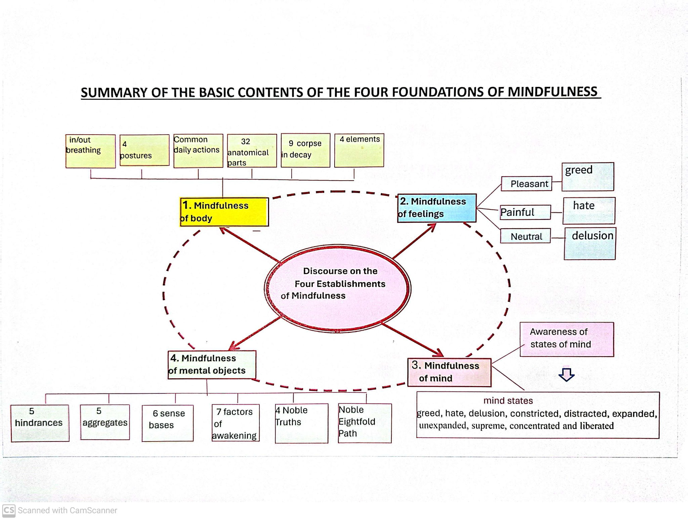
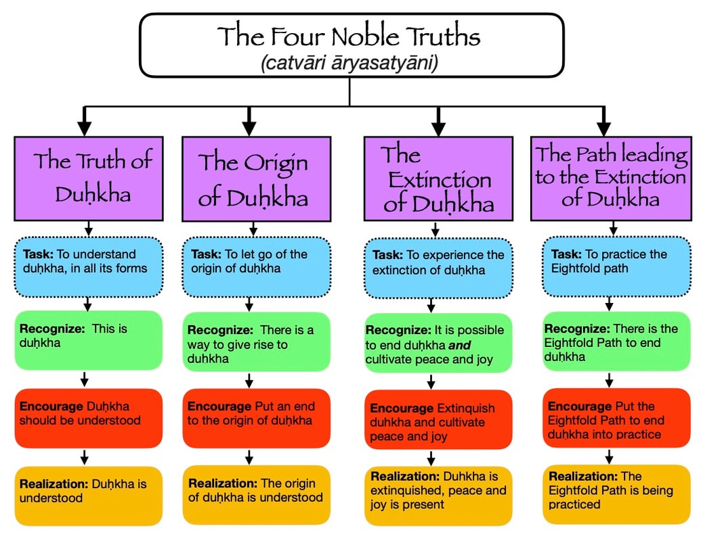

What this lesson is about
The Four Foundations of Mindfulness (Satipatthana) are presented as a direct path for the purification of beings: to overcome sorrow and lamentation, to see the disappearance of pain and grief, and to attain the true way.
At a glance

- Mindfulness of body: breathing, postures, daily actions, elements, and reflections on the body.
- Mindfulness of feelings: pleasant, painful, and neutral feelings.
- Mindfulness of mind: recognizing states of mind as they arise and pass.
- Mindfulness of Dharma (mental objects): hindrances, aggregates, sense bases, awakening factors, truths, and path.
1) Mindfulness of the body
- Breath (in-breath / out-breath)
- Four postures: walking, standing, sitting, and lying down
- Clear comprehension in daily life
- Reflection on the 32 parts of the body
- Four elements: earth, water, heat, air
- 9 corpses in decay (reflection on impermanence)
2) Mindfulness of feelings
- Pleasant, painful, and neither painful-nor-pleasant (neutral)
- Worldly and spiritual feelings
- Awareness of their manifestation, arising, and disappearance
3) Mindfulness of mind
Understanding the mind as:
- Greedy or not greedy
- Hateful or not hateful
- Deluded or not deluded
- Contracted or not contracted
- Not developed or developed
- Not supreme or supreme
- Not concentrated or concentrated
- Not liberated or liberated
Awareness of its manifestation, arising, and disappearance.
4) Mindfulness of Dharma (mental objects)
5 mental hindrances
Sense desire, ill will, sloth and torpor, restlessness and worry, doubt.
Awareness of their manifestation, origin, and disappearance.
5 aggregates of clinging
Form, feelings, perceptions, mental formations, consciousness.
Awareness of their manifestation, arising, and disappearance.
Sense bases
6 internal and 6 external sense bases: eye/visible objects, ear/sounds, nose/smells, tongue/tastes, body/intangible objects, mind/mental objects.
Knowledge of them, the arising, and the abandoning.
7 factors of enlightenment
Mindfulness, investigation of Dharma, energy, joy, tranquility, concentration, equanimity.
Knowledge of their presence, their arising, and their development.
4 Noble Truths
Suffering, its origin, its cessation, and the path that leads to the cessation of suffering.

Noble Eightfold Path
Skillful understanding, thinking, speech, action, livelihood, effort, mindfulness, and concentration.
Put it into practice
- Body: feel the breath or posture for a few moments.
- Feelings: notice pleasant / painful / neutral.
- Mind: name a mind-state (calm, distracted, contracted, etc.).
- Dharma objects: notice patterns (hindrance present? clarity? effort?).
Tip: keep it gentle — noticing is already practice.